자막, 같은 0:31 장면
스레드에서 ‘매칭됨’을 읽는 순간입니다. 고치기 전에는 자막이 앞 문장에 남아 있었습니다.
고치기 전
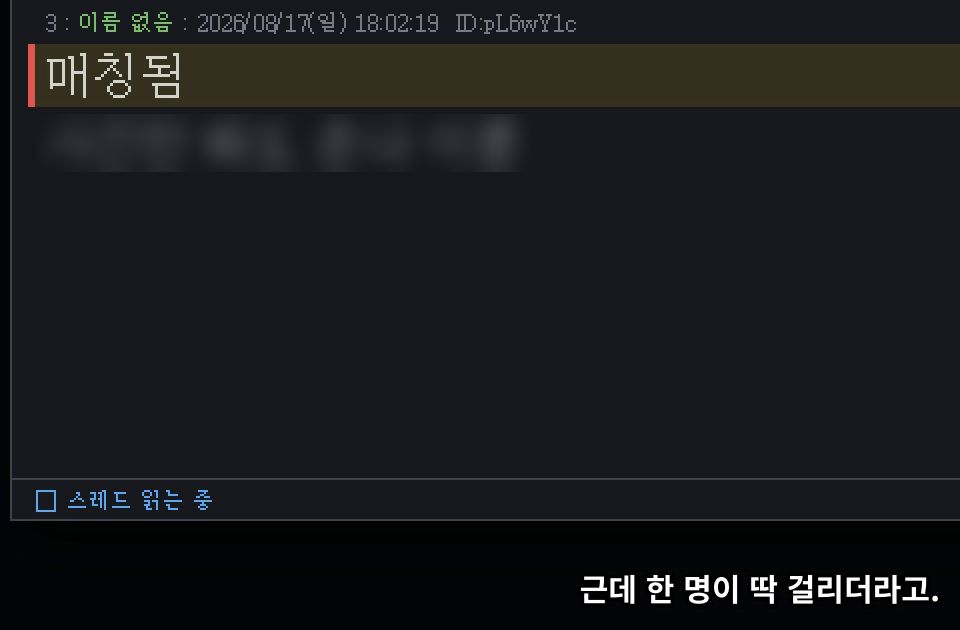
고친 뒤
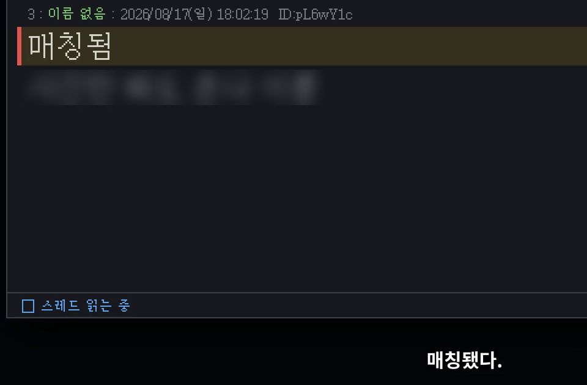
스레드 둘째 줄은 비속어라 흐리게 가렸습니다.
2026.08 ~ 2026.11, 일곱 단계입니다.
제미나이로 시안을 6번 뽑고 고쳐 사시 눈과 접힌 귀를 남겼습니다.
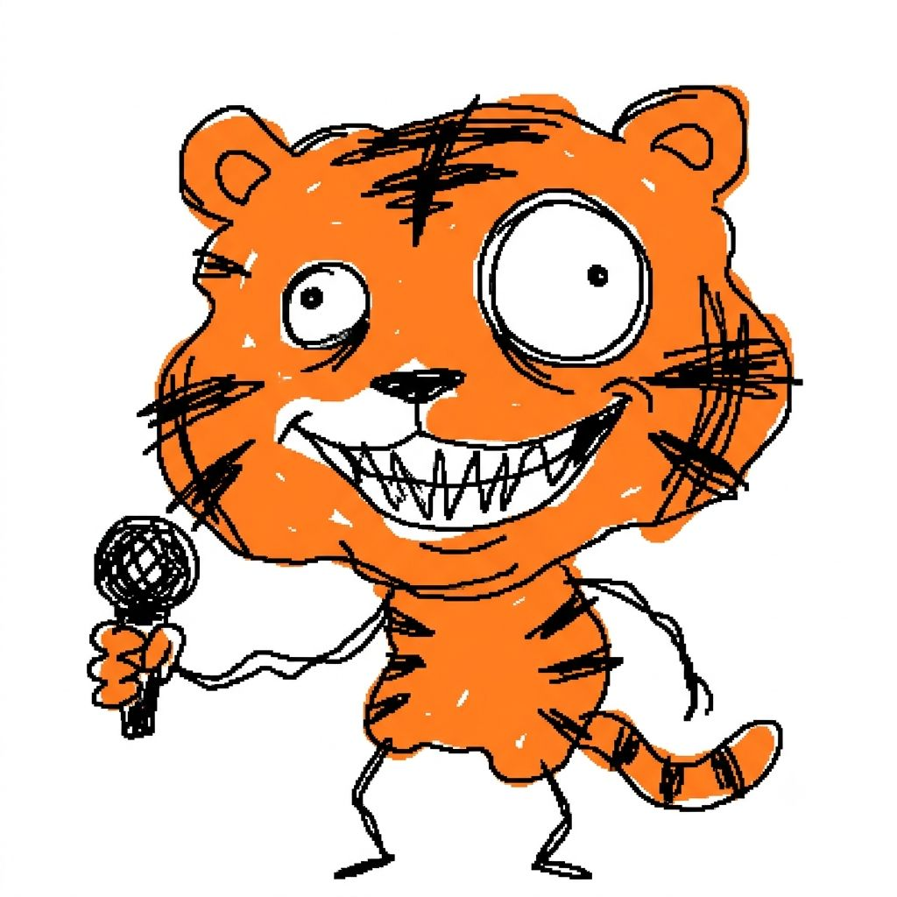
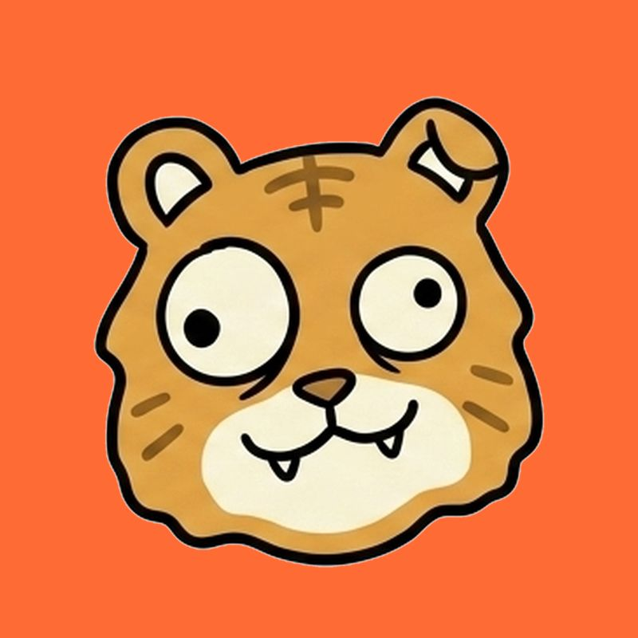
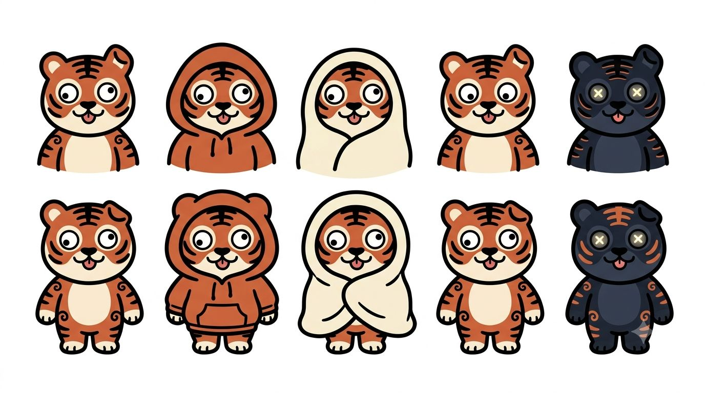
장면마다 프롬프트를 따로 써서 톤을 맞췄습니다.
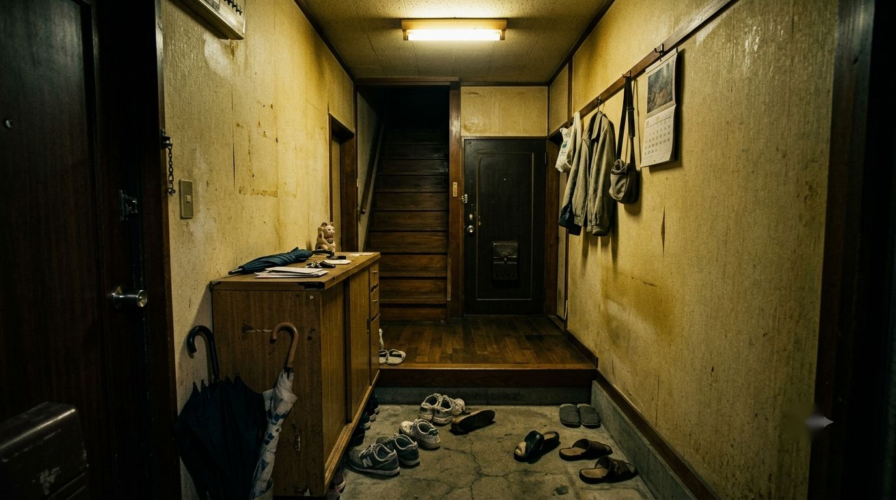
205개 중 133개가 말과 0.35초 넘게 어긋나, 음성 인식과 대본 글자 단위 정렬로 다시 만들었습니다.
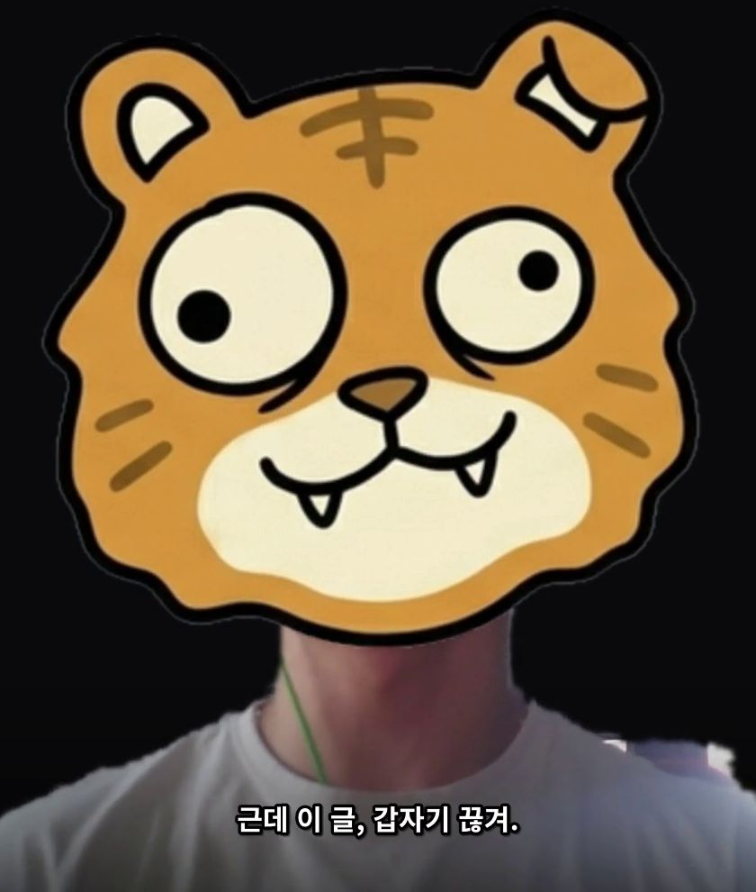
일본 실화 괴담을 호꾹이가 읽어 주는 10분 11초 영상입니다. 추석 연휴 직전 밤 19:00에 올렸습니다.
음성은 후처리 안 3개 중 귀로 골랐고, 최종 음량은 -19.8 LUFS입니다.
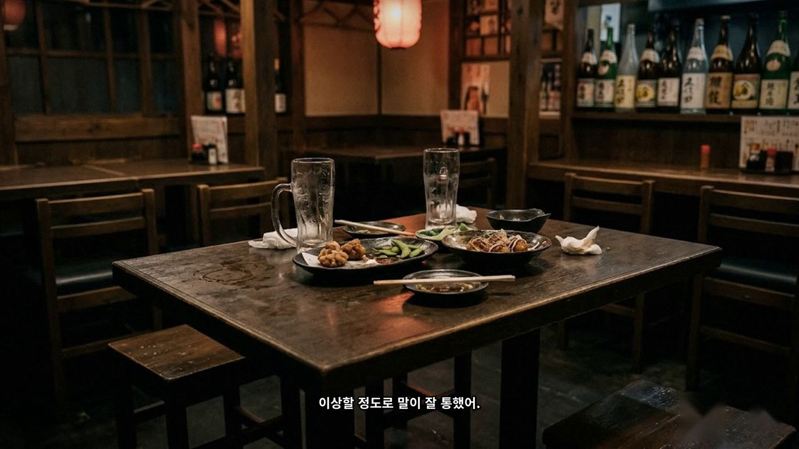
1분 안팎 장면을 세로로 다시 만들어 사흘 동안 하루 하나씩 올렸습니다.
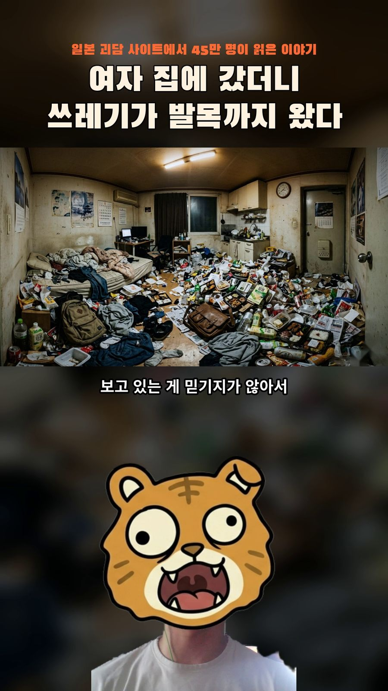
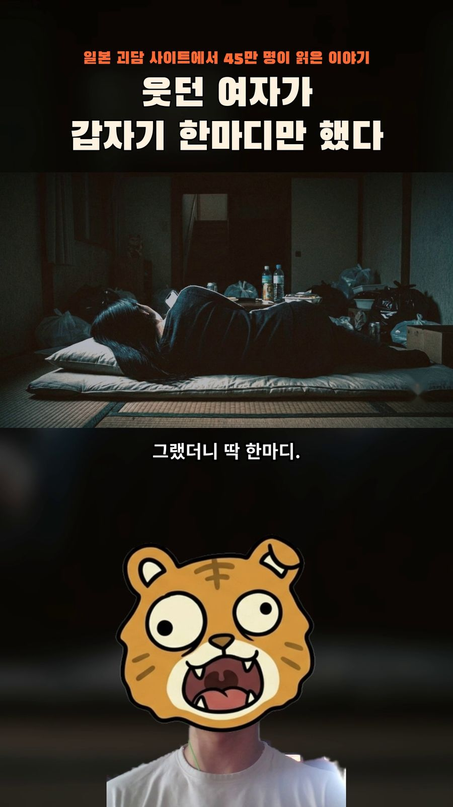
고친 뒤 1화 검색 유입이 5.7%에서 13.6%로 올랐습니다.
YouTube Studio, 2026.09.28 / 2026.10.21 기준
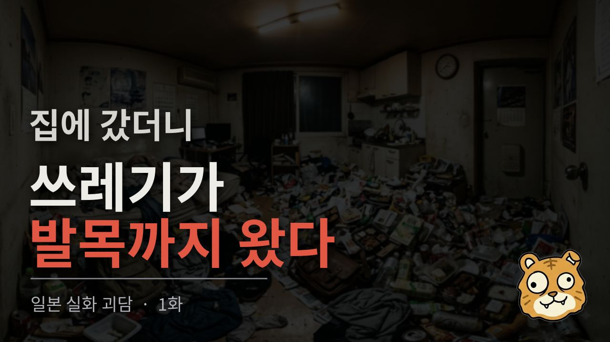
1화 댓글 5개 중 2개가 영화 「옵세션」 요청이었습니다(2026.09.27). 그래서 2화는 결말 포함 리뷰로 만들었습니다.
70분 55초 영상입니다. 챕터를 37개에서 5개로 줄이고(11.07), 재생목록 「호꾹명화」를 만들어 채널 대표 영상을 바꿨습니다(11.08). 쇼츠 10개는 11.09~11.18 매일 19:00에 예약해 올렸습니다.
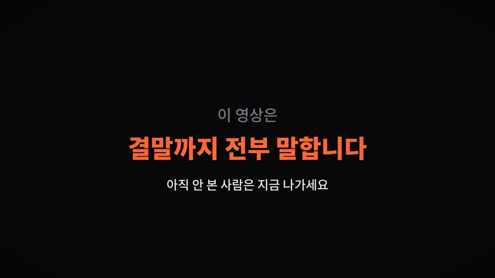
스레드에서 ‘매칭됨’을 읽는 순간입니다. 고치기 전에는 자막이 앞 문장에 남아 있었습니다.
고치기 전

고친 뒤

스레드 둘째 줄은 비속어라 흐리게 가렸습니다.
글자만 있던 화면을 게시판 창으로 다시 그리고, 지금 읽는 줄을 표시했습니다.
처음
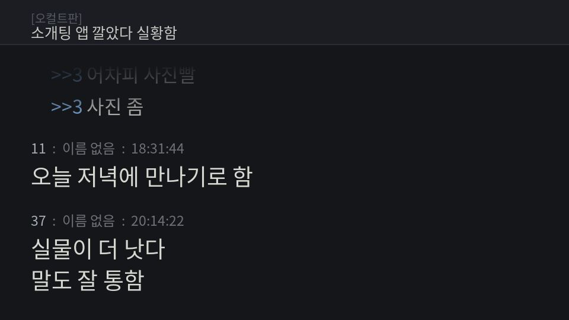
지금
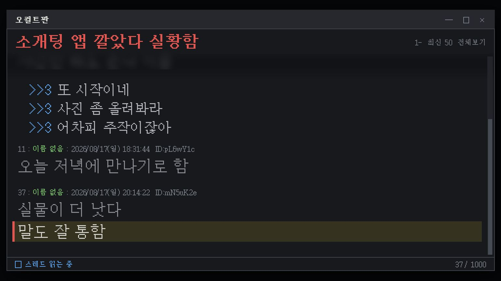
모두 YouTube Studio에서 읽은 값입니다.
6,634
2화 조회수, 공개 5일
공개 2.7일(2026.11.09)에는 4,012회, 같은 날 1화는 공개 46일 누적 151회였습니다.
기준
출처 YouTube Studio
3.9만
2화 노출 수, 공개 5일
클릭률 3.6%
기준
출처 YouTube Studio
13.6%
1화 검색 유입 비율
제목과 태그를 고치기 전에는 5.7%(2026.09.28)였습니다.
기준
출처 YouTube Studio
39명
채널 구독자
기준
출처 YouTube Studio
16.5%
1화 클릭률
노출 200, 평균 시청 1:41, 누적 조회 151
기준
출처 YouTube Studio
6:48
2화 평균 시청 시간
기준
출처 YouTube Studio
88.4%
2화 홈 유입 비율
기준
출처 YouTube Studio
6명
2화로 늘어난 구독자
조회 대비 0.09%
기준
출처 YouTube Studio
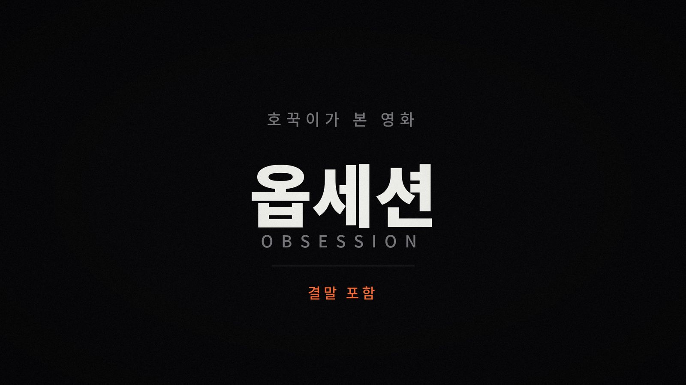